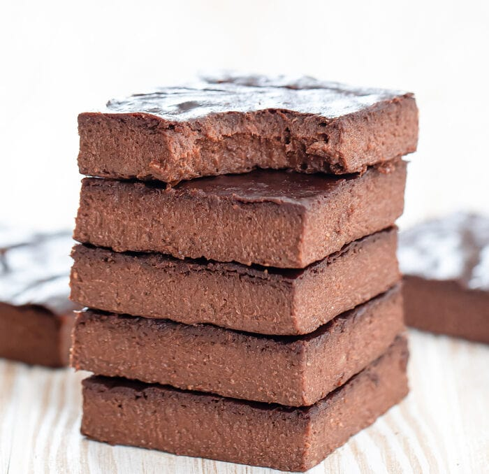

Brownies: But Make it Healthy

Banana, cocoa and peanut butter brownies
A super easy, super tasty and super healthy treat!
Ingredients
- 377g of pureed bananas
- 128g unsweeteneed peanut butter
- 35g unsweetened cocoa powder
Steps
- Preheat oven to 350°F (177°C). Line an 8 x 8 inch baking pan with parchment paper.
- In a food processor or blender, add pureed bananas, peanut butter and cocoa powder and blend until smooth.
- Pour batter into the prepared pan. Bake for about 20-25 minutes. The brownie batter should look puffy and the surface should not be wet. The batter should not be jiggly but when you touch the surface, it should still feel very soft and not quite set. Let brownies cool completely before cutting and eating.
Home